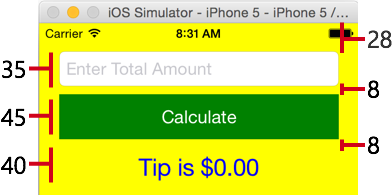
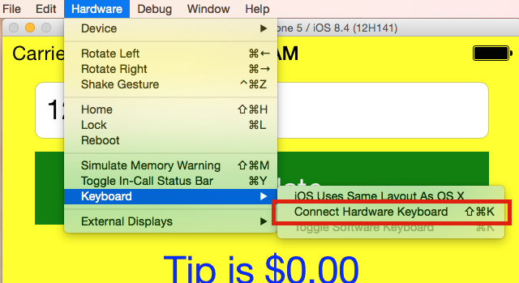

Duration
15 minutes
Lab Goals
In this exercise, we will be adding three controls to our screen: a UITextField, a UIButton and a UILabel to complete the UI for a simple Tip Calculator.
Required assets
The provided Part 03 Resources folder contains a subfolder named Completed with a solution you can use to check your work.
High-level steps
Use the following high-level steps to complete the exercise, step-by-step instructions are provided below that if you need any guidance.
-
Override the
ViewDidLoadmethod in the View Controller. -
Add a
UITextField, aUIButtonand aUILabelas subviews to the root view as shown below. You will need to calculate the proper frame for each control, they should be positioned vertically down the screen like this:  The controls have an 8 point margin between each other, and each control is sized to hold the content. Apple tends to use 8 and 20 as the margin spacing, but as long as you are consistent and it's a reasonable amount of space, you can use your own values. TheUITextFieldneeds more spacing on the top to make sure it sits below the status bar - remember that (0,0) is the top/left corner of the screen.
Steps
Create the UI for our Tip Calculator
In this section, we will add the controls to our UI to create the GUI for the Tip Calculator. You can use either Visual Studio - the instructions are identical for both operating systems.
- Open the MyViewController.cs source file.
-
If you have not done it already, go ahead and override the
ViewDidLoadmethod, make sure to call the base class implementation. -
If you have not set the
BackgroundColorfor theViewto Yellow, then go ahead and add that line of code. Remember you can use theUIColor.Yellowconstant as your color value. -
Create a new
UITextFieldvariable in theViewDidLoadoverride.- Name the field totalAmount.
- Calculate the frame using the above diagram - it should be 20pts from the left and right edges of the screen, 28pts from the top and be 35pts in height (the width is based on the screen). You will need to use the
View.Bounds.Widthto stretch this across the view. You can either pass the calculatedCGRectinto the constructor, or set theFrameproperty. - You will need to add a
usingforCoreGraphicsto use theCGRecttype. - Set the
KeyboardTypetoKeyboardType.DecimalPad. - Set the
BorderStyletoUITextBorderStyle.RoundedRect. - Set the
Placeholderto "Enter Total Amount".
-
Create a new
UIButtonvariable in theViewDidLoadoverride.- Name the field calcButton.
- Pass
UIButtonType.Customto the constructor so we can change the colors. - Calculate the frame using the above diagram, like the text field, it should be 20pts from the left and right edges of the screen and should be 8pts below the text field. From the above diagram, it should be 45pts in height. You will need to set the
Frameproperty directly in order to use the constructor that takes a button type. - Set the
BackgroundColorto a dark green using theUIColor.FromRGBstatic method (make the green component 0.5f to make it darker). - Use the
SetTitlemethod to set the text to "Calculate" for theUIControlState.Normal.
-
Finally, create a new
UILabelvariable in theViewDidLoadoverride.- Name the field resultLabel.
- Calculate the frame using the above diagram, it should be 40pts high and have the same left and right margins as the other two controls. You can pass the frame into the constructor, or set the property.
- Set the
TextColortoUIColor.Blue. - Set the
TextAlignmenttoUITextAlignment.Centerto center the text horizontally. - Set the
Fontproperty toUIFont.SystemFontOfSize(24)to make the font slightly larger than normal - the parameter passed to this method is the font point size. - Set the
Textproperty to"Tip is $0.00"so we have some default text we can see.
- Now we need to add all these child views into our screen. You can add them individually (
View.AddorView.AddSubview), or add them as an array ofUIViewobjects usingView.AddSubviews. - Build and run the application - you should see an interactive UI, it won't have any behavior yet, but you should be able to tap in the edit field and enter values with the on-screen keyboard:
- If you don't see the on-screen keyboard when you tap, but you see a cursor, then it's likely that the simulator is configured to use the hardware keyboard on your Mac. You can change this using the Hardware > Keyboard > Connect Hardware Keyboard option on the simulator menu. 
- One interesting thing about the application to play with: notice that the on-screen keyboard appears automatically when you tap in the edit field, but does not dismiss when you tap the button? We'll talk about this behavior next.
public override void ViewDidLoad()
{
base.ViewDidLoad();
this.View.BackgroundColor = UIColor.Yellow;
}

As mentioned above, there is a completed solution in the Part 03 Resources folder - if you have any trouble, you can compare your code against the final solution.
Summary
In this exercise, you have added several controls to your application. The final step will be to add some behavior to the tip calculator.